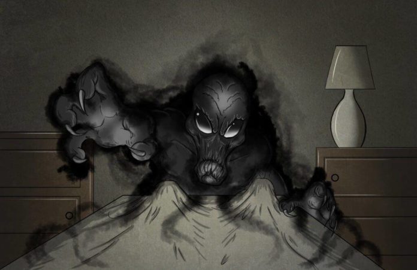

Não se pode perder tempo! Iniciar o encantamento foi a escolha mais sábia. Porém no meio do
ritual o hospedeiro se revela, Bruce a contra gosto o deixa inconsciente e finaliza para só
então salvar e selar o corpo dessa pessoa que para ele é especial. Quem era o hospedeiro do
espirito do palhaço do crime?

O comissário Gordam, aquele bigode numca me enganou.
O Alfred, o mordomo sempre é o culpado.
O Robin, e o Coringa ainda vestiu ele com roupas do Village People e glitter.
O pai dele Thomas Wayne que foi ressucitado pelo poço de Lazaro e o Coringa pretendia ir comprar cigarro no corpo dele.